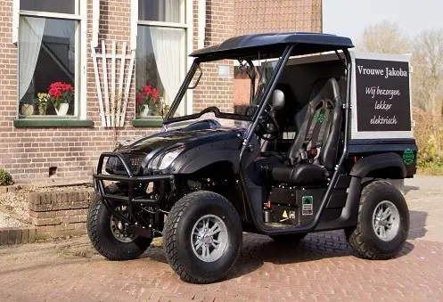

Terreinbanden
Leffert terreinbanden, set van vier stuks. Vervangbaar en uit voorraad leverbaar.
BestellenRobuust en compact, ontwikkeld voor professioneel terreinvervoer. Wendbaarheid, kracht en functionaliteit in één duurzame oplossing.
 Standaard met kenteken
Standaard met kenteken
De Leffert FM-50 van Frisian Motors is een robuust en compact elektrisch werkvoertuig dat speciaal is ontwikkeld voor professioneel terreinvervoer. Deze 100% elektrische transporter combineert wendbaarheid, kracht en functionaliteit in één duurzame oplossing voor organisaties die kiezen voor efficiënt transport.
Stil rijden en emissievrij werken zorgen voor minimale belasting van de omgeving en maximaal comfort voor gebruikers. Dankzij de praktische laadbak en sterke elektrische aandrijving is het voertuig ideaal voor onderhoudswerkzaamheden, groenbeheer, technische dienst en logistieke ondersteuning.
Campings, recreatieparken en vakantieparken rijden de hele dag heen en weer tussen receptie, sanitair en de verste veldjes. De FM-50 doet dat zonder motorgeluid en zonder uitstoot, ook vroeg in de ochtend langs slapende gasten.

Gemeentelijke diensten werken in woonwijken, parken en op begraafplaatsen, vaak op plekken waar een bestelbus niet komt of niet gewenst is. De FM-50 is smal genoeg voor het pad en sterk genoeg voor de dag.

Op het erf en in het land is de FM-50 het voertuig dat altijd klaarstaat. Korte ritten, zware vrachten en een laadbak die tegen een stootje kan, zonder dat er een trekker voor hoeft te starten.

Zorginstellingen met een groot terrein verplaatsen de hele dag mensen, maaltijden en materiaal. De FM-50 rijdt stil langs de paviljoens en is met een winddichte cabine het hele jaar comfortabel.

Afhankelijk van de gebruikswensen kan het voertuig niet alleen technisch, maar ook qua uiterlijk geheel naar wens van de klant worden samengesteld. Bij specifieke gebruiksdoeleinden zijn er tal van accessoires beschikbaar, die het voertuig multifunctioneel maken.
Denk hierbij aan verlengde of geheel gesloten laadbakken of een gesloten en verwarmde cabine. Zelfs een uitvoering als verlengde vierzitter behoort tot de mogelijkheden.
100% op stroom. Speciaal voor onze voertuigen hebben wij een krachtige accu ontworpen. Onze lithium accu's zijn krachtiger, laden sneller op, zijn minder zwaar en gaan drie keer langer mee dan de loodaccu's. Met een externe acculader op het lichtnet is de Leffert transporter overal en altijd binnen acht uur opgeladen.
Leffert terreinbanden, set van vier stuks. Vervangbaar en uit voorraad leverbaar.
Bestellen
Wilt u er graag warmpjes bij zitten? De cabine van de Leffert kan winddicht gemaakt worden.
Meer informatie
Veel aspecten van het voertuig kunnen aangepast worden aan uw werkzaamheden.
Meer informatie
Wij komen bij u op het terrein, of u komt naar Bakkeveen. De proefrit is gratis en geheel vrijblijvend, en u merkt binnen vijf minuten wat emissievrij werken met uw team doet.